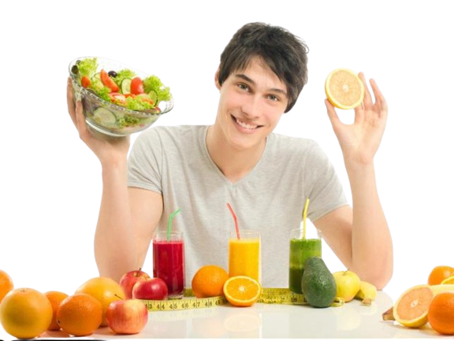

|  |
Manfaat Konsumsi Buah-buahan
Sumber Vitamin, Berbagai jenis vitamin ada di buah. Sumber Air dan Gizi, buah merupakan salah satu sumber air untuk
tubuh dan kebutuhan gizi yang dapat meningkatkan metabolisme tubuh. Sumber antioksidan, buah merupakan salah satu sumber antioksidan alami Mencegah penyakit tertentu. Buah-buahan merupakan salah satu cara untuk
menghindarkan kita agar tidak terserang penyakit berbahaya dan berbagai
penyakit lainnya. Obat luar tubuh, buah-buahan juga dapat digunakan untuk obat luar
seperti jerawat, bisul dan sebagainya.
|